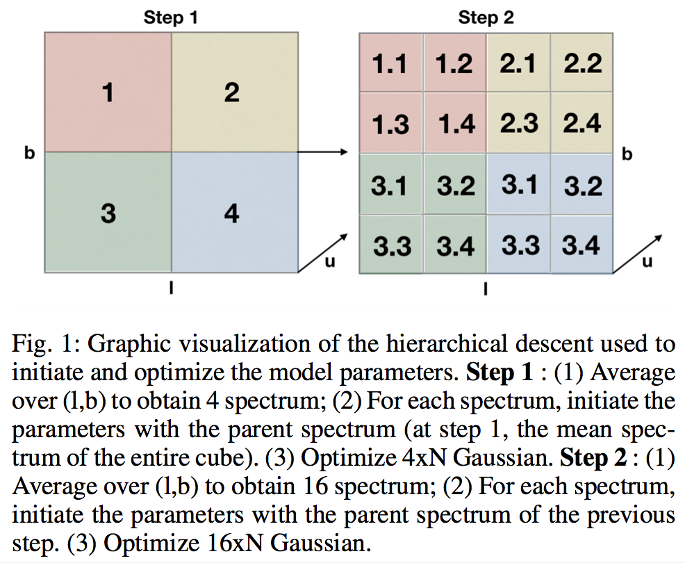
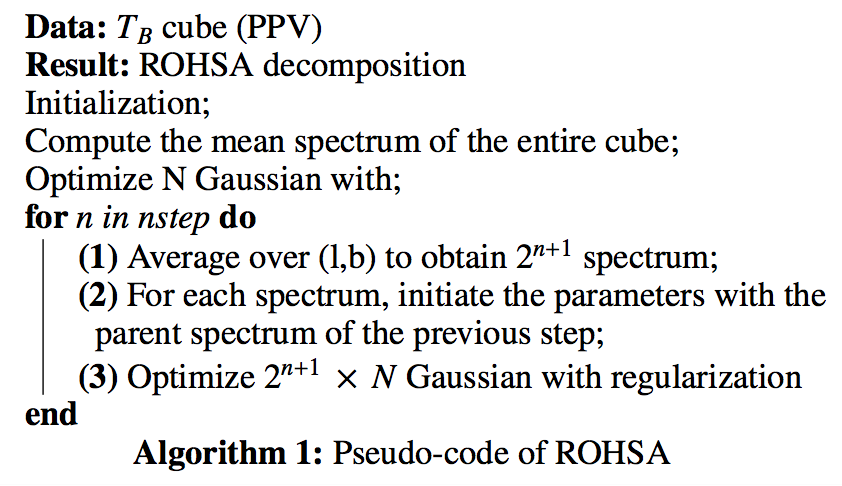

Algorithm
Algorithm

ROHSA algorithm
To initiate the model parameters, we chose a hierarchical approach. Since the fluctuation along the velocity axis are weak from one spectrum to its neighbors, it is possible to go from the highest resolution (initial resolution) to the lowest resolution (mean spectrum of the observation) averaging at each step, along the velocity axis, over four neighbors. Starting now from the lower one, we adopt the following algorithm : we optimize N Gaussian on the single mean spectrum. Then we propagate the solution as initialization of the optimization at the next level which contains four spectra. We repeat the process until we reach the highest resolution, i.e. the initial one. Figure 1 and Algorithm 1 shows a graphic visualization and the pseudo-code of the algo- rithm. It is important to maintain the regularization at each step of the descent to link the amplitude, the position and the dispersion of each Gaussian over the two spatial dimensions.


Optimization algorithm
We used a quasi-Newton method, the L-BFGS-B (Limited-memory Broyden–Fletcher–Goldfarb–Shanno with Bounds) algorithm (see Zhu et al. 1997 to perform the optimization. L-BFGS-B uses an estimation to the inverse Hessian matrix H (the second derivative of f(β)) to identify the direction of steepest descent and to update the input parameters at each iteration. If the problem has n parameters to optimize, H takes nxn values in memory. L-BFGS-B allows us to estimate H storing considerably less variables. Since we are already locked by the huge amount of data, we want to minimize the allocated memory in order to compute the larger field we can. Finally, since we want the positivity of each amplitude of the Gaussian, we used L-BFGS-B to support boundary conditions.